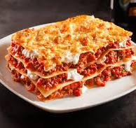

Lasagna

Description
This classic lasagna recipe is a hearty, comforting dish that's perfect for family dinners. Made with layers of rich meat sauce, creamy béchamel, and gooey cheese, it's a crowd-pleaser that never goes out of style.
Our lasagna is baked to perfection with a golden, bubbling top. Each layer is carefully crafted to ensure a delicious balance of flavors. Serve with a side salad and some garlic bread for a complete meal.
Ingredients
- 12 lasagna noodles
- 1 pound ground beef
- 2 cups ricotta cheese
- 2 cups shredded mozzarella cheese
- 1 cup grated Parmesan cheese
- 2 cups marinara sauce
- 1 egg
- 2 cloves garlic, minced
- 1 teaspoon dried basil
- 1 teaspoon dried oregano
- Salt and pepper to taste
Steps
- Preheat the oven to 375°F (190°C).
- Boil the lasagna noodles according to package instructions. Drain and set aside.
- In a skillet, brown the ground beef with minced garlic, dried basil, and oregano. Drain excess fat.
- Mix the ricotta cheese, egg, and a pinch of salt in a bowl.
- Spread a layer of marinara sauce on the bottom of a baking dish.
- Add a layer of lasagna noodles, then spread a layer of the ricotta mixture.
- Add a layer of ground beef and sprinkle with mozzarella and Parmesan cheese.
- Repeat the layers until all ingredients are used, finishing with cheese on top.
- Cover the dish with foil and bake for 25 minutes.
- Remove the foil and bake for an additional 10-15 minutes, until the top is golden and bubbly.
- Let the lasagna cool for a few minutes before serving.